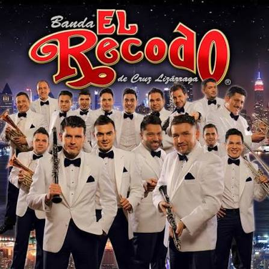
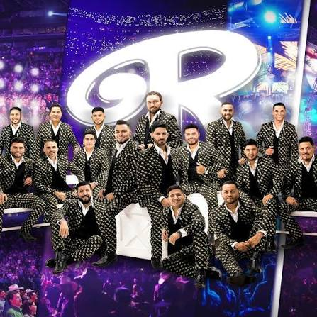

Una tradición que se ve y se escucha
El sonido de Sinaloa


En vivo y a todo volumen
La música continúa
Dale play
Escucha a Banda El Recodo
Una historia que comenzó en 1938
De El Recodo para el mundo
Banda El Recodo, también conocida como Banda El Recodo de Don Cruz Lizárraga, nació en El Recodo, un pueblo del municipio de Mazatlán, Sinaloa. Fue fundada en 1938 por Cruz Lizárraga.
Pionera en la divulgación de la música de banda sinaloense, ha llevado el sonido de su tierra a nuevas generaciones y a escenarios de todo el mundo.
Descubre más sobre su historia